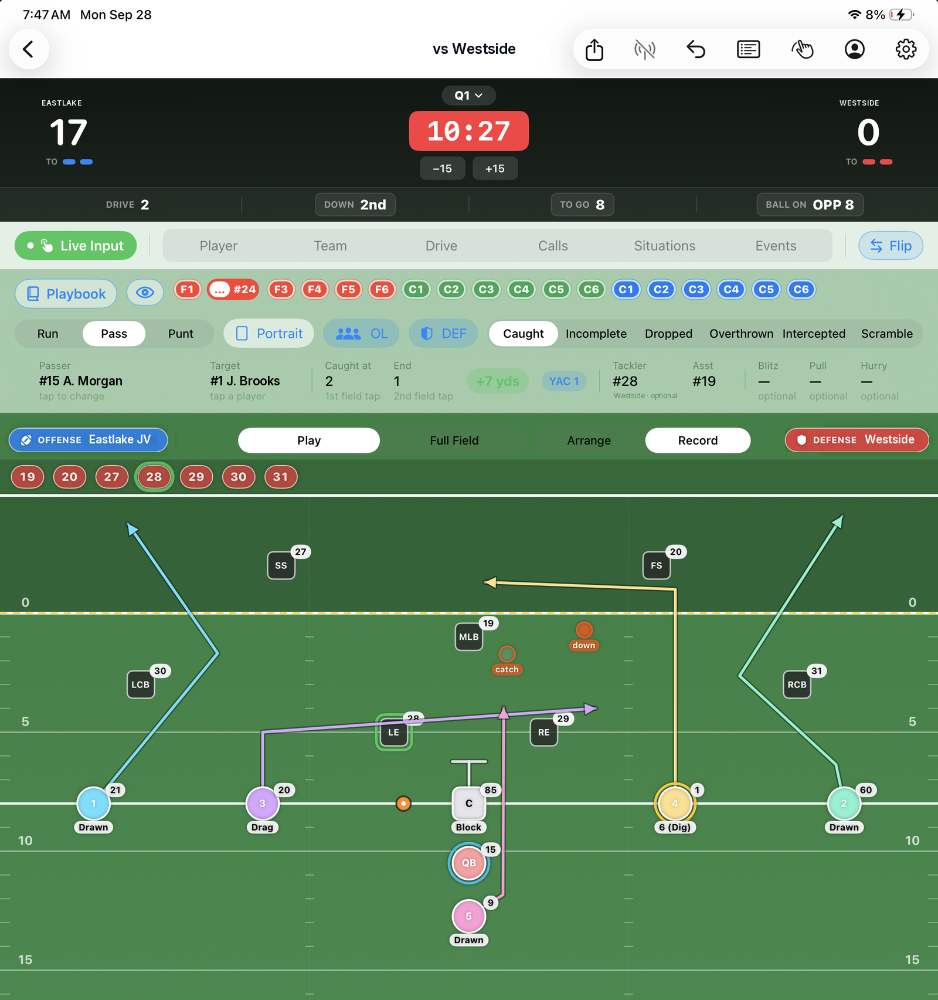
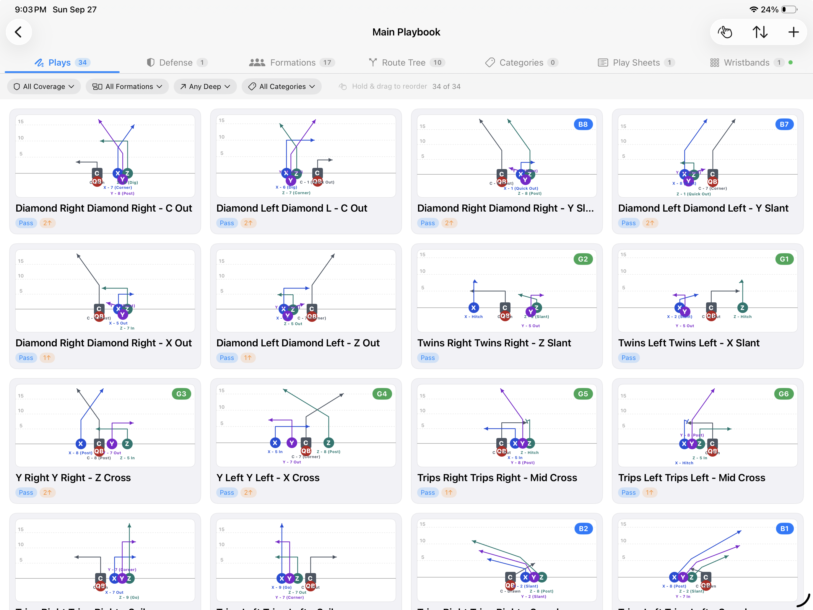
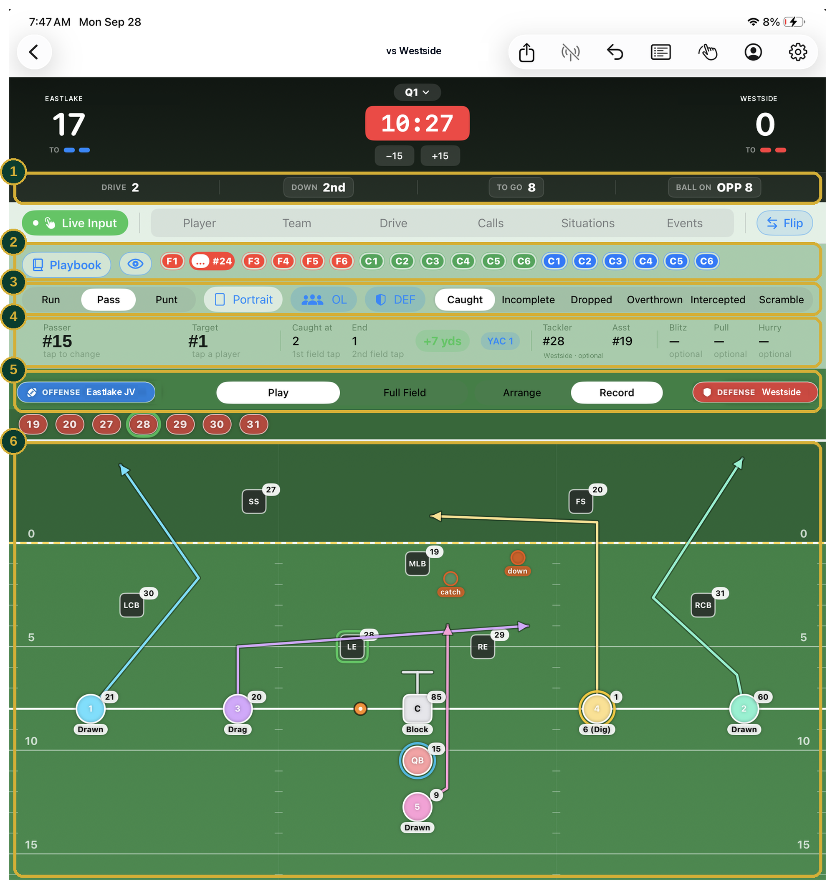

Draw your plays, print the wristbands, call them on Saturday, and tag each snap with the call you actually made. By Monday you know which calls worked — because the playbook and the stat sheet were never separate things.

assets/flag-football-hero.pngDraw it once. Use it all week, and on game day.

assets/flag-football-play-editor.pngFast enough for the sideline. Deep enough for Monday.

assets/flag-football-live-input.pngDrive number, down, distance and ball spot advance on their own as you log snaps. Nobody on your staff is tracking the chains twice.
Tag the call you actually made from your own formation and play chips. This is what lets the app grade play-call effectiveness later.
Run or pass, then what happened — caught, incomplete, dropped, overthrown, intercepted, scrambled. One row covers every outcome.
A completed pass asks for passer, receiver, yardage and tackler. Change the result and the row changes with it, so you are never staring at fields that cannot apply.
Flip between your offense and your defense without leaving the screen, so one person charts the whole game.
Two taps on the field set where the ball was caught and where the play ended. The yardage, the drive chart and the field-position report all come from that.
Plays in your own words
Call sheet and wristbands
From the sheet you printed
The snap, with its call
Which calls actually worked
5v5 through 7v7, built around NFHS and NFL FLAG — no kicking, no-run zones, and one- and two-point conversions from the 5 and the 10.
Flag pulls, pass breakups, interceptions, forced fumbles and snap counts, player by player — so the defensive half of your box score is as detailed as the offensive half.
Import jersey numbers and names straight from a roster image, then review before saving.
Send teams, playbooks, and games to another coach's iPad by AirDrop, Messages, or Mail.
Set up to three units per side, with rotation tables printed on the call sheet.
Everything stays on the iPad. No accounts, no cloud sync, no bars needed at the field.
An assistant follows score, situation, and every stat tab as it happens, without touching your inputs.
HTML reports and CSV exports, with records, team totals, and player lines rolling up across the season on their own.
Coaches Box Flag Football is in TestFlight while we run it through live Saturdays. Email us and we'll get you in, or set up a walkthrough before your season starts — and if you need something to hand a program director, there's a printable one-pager below.